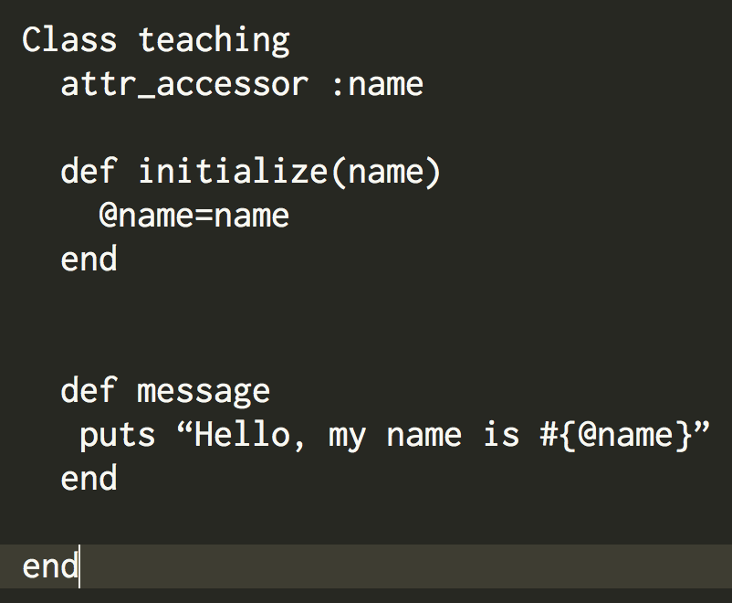

Ruby Classes


Hey everyone, I hope that you are having a great day! This past week at DBC I really solidified my knowledge of classes in ruby. Today I will be explaining to you the difference between a instance variable and a local variable. Also, I will be talking about instance methods and how they work.
First off let’s dive into instance variables. Instance variable differ from local variable because instead of only being available to be called on within the method, they can be called upon anywhere in the class. You can define an instance variable with the @ symbol right before the variable. As you can see above I have identified @name as my instance variable and set it equal to name. Now, for every new method I write inside the teaching class, the instance variable can be accessed. As you can see in my message method I use the @name variable in my string so I am able to call on it.
Now let’s talk about what an instance method is. I have defined an instance method in my teaching class. It is denoted with the attr_accessor method. There are three kinds on instance methods -attr_reader -attr_writter -attr_accessor. these methods essentially make it easier to display or change instance variables without having to define methods.
What an attr_reader amounts to in a class is equal to this(I am using my class above as the example): def name @name end A reader method makes it simpler to display the variable without having to call on a method to do so. If I were to use an attr_writter in the class above it would equal this:
If I were to use an attr_writter in the class above it would equal this: def name(name) @name=name end as you can see in this method the attr_writter makes it easier for you to change the value on an instance method without having to define a method. Finally, an attr_accessor method combines both of what the reader and writer method do into one. This make it easier to display a instance variable an to also change it to something else. That’s all i have for today on instance methods and hope you have a great day!